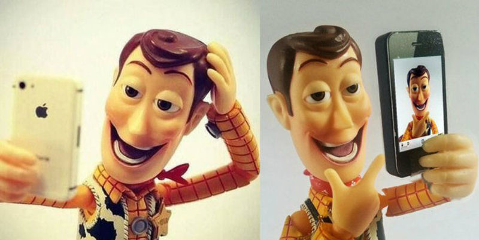

"POSTUREO"AREKIN TREBEAK

Irudiaren iturria: https://smartgroupuah. wordpress.com/2018/04/19/el- postureo-en-las-redes- sociales/
Ikusi ondoko bideoak:
https://www.youtube.com/watch?v=I5vQk1mukZ4
Sare sozialetan proiektatzen dugun irudiaren eta errealitatearen arteko aldeari buruz hausnartzea garrantzitsua da geure burua eta mundu digitalean besteekin dugun harremana sakonago ulertzeko.
Hona hemen hausnarketa-prozesu honetan lagun dezaketen jarduera batzuk:
https://www.youtube.com/watch?v=I5vQk1mukZ4
1.- Autohausnarketa: Zuen sare sozialen profilen azterketa egin, azken hilabetean argitaratutako edukiak aztertuz eta zer irudi transmititzen duten hausnartuz.
2.- Argitalpenak eta sentimenduak alderatzen:
Hautatu zure sare sozialetan argitaratu berri dozun argazkiren bat eta aztertu arretaz. Deskriba dezakezu nola sentitzen zinen benetan argazki hori atera zenuenean edo argitalpen hori idatzi zenuenean? Desberdintasunik egon al zen proiektatu zenuen irudiaren eta benetan bizitzen ari zarenaren artean?
3.- Aukeratu lagun baten azken argitalpena sare sozialetan eta idatzi argitalpen horrek kanpotik ematen dizun inpresioa. Gero, imajinatu nolakoa izan daitekeen errealitatea argitalpen horren atzean, eta idatzi zure laguna zelan sentitu zitekeen une horretan.
4.- Eztabaida taldean: sare sozialetan proiektatutako irudiaren eta errealitatearen arteko arrakalari buruzko esperientziak eta hausnarketak partekatu. Animatu zaitezte zuen pentsamenduak partekatzera eta hausnarketa-prozesu horretan elkarri laguntzera.
5.- Egin meme bat sare sozialetan proiektatzen dogun irudia eta errealitatearen arteko arrakala islatzeko. Erabili Memeka aplikazioa.
6.- Multimedia edukiak: Bideoak, podcastak edo infografiak sortu, gaiaren inguruko ezagutza zabaltzeko eta kontzientzia pizteko.
BALIABIDE DIGITALAK: memeka, canva, bandlab
Aurreko jarduerek gazteei sare sozialak beren burua aurkezteko nola erabiltzen dituzten eta hori beren barne-errealitatetik nola alda daitekeen hobeto ulertzen lagun diezaiekete. Mundu digitalean besteekiko enpatia eta ulermen handiagoa ere bultza dezakete.